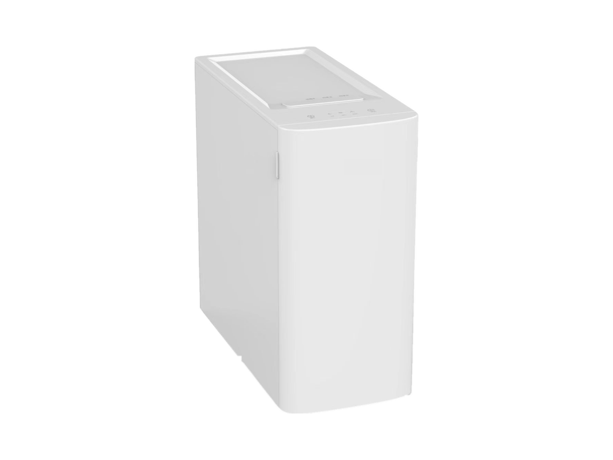

シンク下設置型
シンク下設置型RP-U07
400～600 GPDシンク下RO浄水器
SKU: RP-U07
MOQ：お問い合わせ時に確認
ホーム/製品/シンク下ROシステム/ RP-U06

シンク下ROシステム
小膜RO・内蔵タンク付き — 4オプション。デュアルエンジンがシリーズをリードします。
RP-U06は小膜・内蔵タンク式ROファミリーです。コンパクトなRO膜と内蔵水タンクを組み合わせ、大きな膜なしで高流量を実現します。4つのオプションは同じ考え方で、タンクサイズ・膜・加熱が異なります。デュアルエンジン（400G膜、2L圧力タンク、飲料水＋キッチン洗浄のデュアルアウトレット、純水流量1.05 L/min）、4.1Lタンク（100G、4.1L内蔵純水タンク、4–9 L/min）、8Lタンク（50–150G、UV付き8L内蔵タンク、2.5–5 L/min、4温度瞬間加熱バージョンはオプション）、7.5Lタンク（75/100G、静止UV付き7.5L内蔵純水タンク、5 L/min、サイドプラグイン式カートリッジ交換、蛇口厚膜加熱バージョンはオプション）です。仕様はモデル・ご注文ごとに確認いたします。
電圧／周波数は対象国に合わせて設定可能です。その他の構成は注文ごとに確認します。
RP-U06は小膜・内蔵タンク式ROファミリーです。コンパクトなRO膜と内蔵水タンクを組み合わせ、大きな膜なしで高流量を実現します。主力オプションはデュアルエンジン（400G膜、2L圧力タンク、飲料水＋キッチン洗浄のデュアルアウトレット、純水流量1.05 L/min、最初の3秒間は4.2 L/min超の初期流量）です。さらに3つのオプションが同じ考え方を共有します。4.1Lタンク（100G、4–9 L/min）、UV付き8Lタンク（50–150G、2.5–5 L/min）、静止UV付き7.5Lタンク（75/100G、5 L/min）です。4つのオプションはいずれも定格純水量4000 Lです。
最小注文数量はいくつですか？
初回注文はモデルあたり200台、再注文は500台です。
大口注文の前にサンプルを注文できますか？
はい。サンプルは15日でご用意できます。サンプル費用は初回大口注文時に返金されます。大口注文はサンプル承認後40日で出荷し、FOB深圳条件となります。
どのオプションを選ぶべきですか？
RP-U06でお見積もりのうえ、オプションをご指定ください：デュアルエンジン（400G、2L圧力タンク、デュアルアウトレット）、4.1Lタンク（100G）、UV付き8Lタンク（50–150G、加熱オプション）、または7.5Lタンク（75/100G、静止UV）。
内蔵タンク4オプション — RP-U06でお見積もりのうえ、オプションをご指定ください（デュアルエンジン、4.1Lタンク、8Lタンク、7.5Lタンク）。
バリアント画像にホバーすると仕様が表示されます。タッチ画面では画像をタップしてください。



各バリエーションの仕様をすべて並べて表示。下の仕様表にRP-U06の値を示します。
| 仕様 | RP-U06-1 — デュアルエンジン (YRO-400G) | RP-U06-2 — 4.1Lタンク (M2503R) | RP-U06-3 — 8Lタンク、加熱オプション (M922RN) | RP-U06-4 — 7.5Lタンク (AM601R) |
|---|---|---|---|---|
| RO膜 | 400G | 100G | 50～150G（200G対応可） | 75/100G |
| タンク | 2L圧力タンク | 内蔵純水タンク4.1L | UV付き内蔵純水タンク8L | 内蔵純水タンク7.5L、静置UV 99.9% |
| 出力流量 | 純水1.05 L/min；初めの3秒間の初期流量>4.2 L/min | 4–9 L/min | 2.5～5 L/min、約1900G相当 | 5 L/min |
| 各出口 | デュアル：飲用＋キッチン洗浄 | 単一出口 | ご注文ごとに確認いたします | 単一出口 |
| 加熱 | 加熱なし | 加熱なし | オプション：4段階温度瞬間温水、2100W、20 L/h | オプション：蛇口厚膜加熱、2100W、25／45／65／85／100°C |
| 寸法（長さ×幅×高さ） | 467 × 160 × 384 mm | 352 × 160 × 319 mm | ご注文ごとに確認いたします | 415 × 187 × 392 mm |
| 定格浄水量 | 4000 L | 4000 L | 4000 L | 4000 L |
| ろ過 | PAC複合＋RO（カートリッジ2本） | PPC＋RO＋ポストカーボン | PPC + RO + C | PP＋活性炭複合＋RO＋ポストカーボン（3カートリッジ、4層） |
| 電圧／周波数 | 対象国に合わせて設定可能 | 対象国に合わせて設定可能 | 対象国に合わせて設定可能 | 対象国に合わせて設定可能 |
ROPureOEMカタログの仕様 22 行。
| RO膜 | 400G |
|---|---|
| ろ過 | PAC複合＋RO（カートリッジ2本）；汎用ろ材 |
| 純水流量 | 1.05 L/min |
| 正味水流量 | 2.0 L/min |
| 初期純水流量 | 初めの3秒間>4.2 L/min（0.25 MPa、25°C水道水） |
| 定格総純水量 | 4000 L（純水）；4000 L（浄水） |
| 節水効率 | 1級；純水製造率0.65；脱塩率≥93%（0.25 MPa、25°C水道水、30分後） |
| 定格出力 | 72 W |
| 騒音 | ≤55 dB(A)音響パワー |
| 圧力タンク | 2 L |
| 蛇口 | デュアル出口：飲用＋キッチン洗浄；グレーの機械式蛇口、ノブ操作、露出部60 cm |
| 加熱 | なし |
| フィルター寿命リマインダー | 電源オン時間＋ポンプ稼働時間（デュアル計算） |
| フラッシング | 自動；残留水ゼロ（フラッシングプログラム、逆流なし） |
| TDS検出／除菌 | なし |
| 電源オフメモリー | はい |
| 膜前使用圧力 | 0.4–0.8 MPa |
| 適用水圧／水温 | 0.1–0.4 MPa; 5–38 °C |
| 感電防止 | クラスII |
| 寸法 | 467 × 160 × 384 mm |
| 正味重量 | 9.5 kg |
| 総重量 | 10.3 kg |
| 梱包寸法 | 565 × 231 × 505 mm |
| 電圧／周波数 | 対象国に合わせて設定可能（定格220 V〜、50 Hz） |
| その他の構成 | ご注文ごとに確認いたします |
仕様はROPureOEMカタログに基づいています。値がまだ確認されていない場合は「注文ごとに確認」と記載しています。未確認の数値は公表しません。